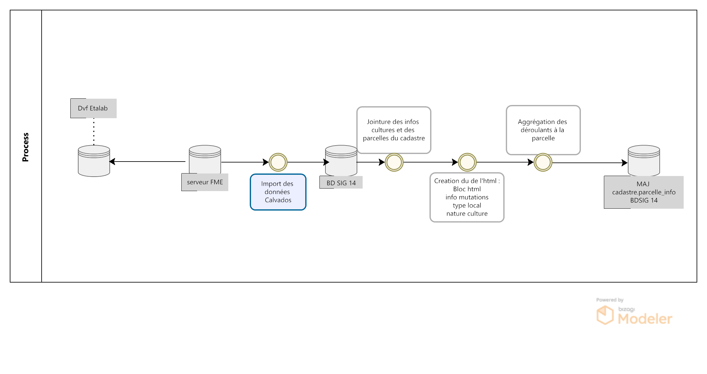
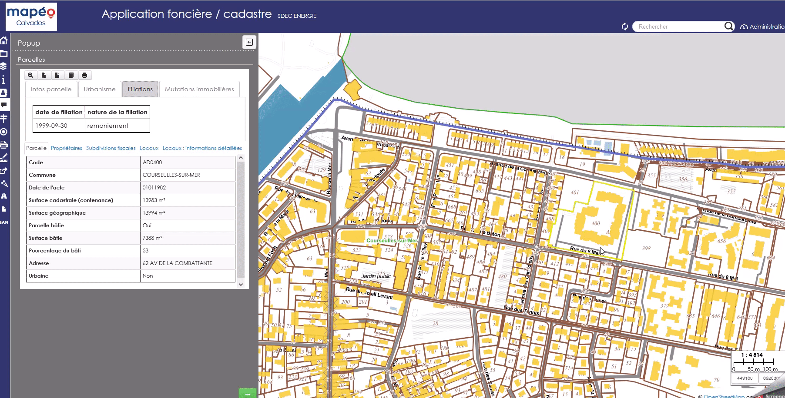

IV- Ajouter un onglet “Mutations immobilières” à la pop-up cadastre de Lizmap
{kind=link}
Le jeu de données « Demandes de valeurs foncières », publié et produit par la direction générale des finances publiques, permet de connaître les transactions immobilières intervenues au cours des cinq dernières années. Les données contenues sont issues des actes notariés et des informations cadastrales.
Il est disponible sur le site datagouv.fr
Les fichiers correspondant chacun à un millésime sont mis à disposition au format.txt. sur cinq ans.
Les fichiers mis à disposition font l’objet d’une mise à jour semestrielle, en avril et en octobre.
A partir de ce fichier, le pôle SIG du Département du Calvados, propose de consulter l’historique des mutations immobilières et leurs valeures foncières à l’échelle d’une parcelle.
{kind=link}
1- Champ HTML historique déroulant
L’objectif est ici de pouvoir consulter l’historique des mutations immobilières et les valeurs foncières à l’échelle de la parcelle.
L’utilisateur peut en cliquant sur une parcelle, consulter les différentes mutations immobilières opérées sur la parcelle ces 5 dernières années.
Pour cela on utilise une fonction postgresql/gis pour alimenter la table parcelle_info du cadastre et une mise en forme du formulaire QGIS en HTML pour publication sur le portail cartographique Lizmap.
1.1 - Fonction postgresql/gis
On créé le champ contenant l’html des déroulants détaillant les filiations du plus récent au plus ancien
ALTER TABLE cadastre.parcelle_info ADD column deroulant_dvf varchar;
On lance ensuite une fonction postgresql/gis dont le code SQL se trouve à cet endroit
Dans un premier temps, on sélectionne des valeurs de champs distincts pour éviter les doublons
select distinct on ( a.code_ch, a.ref_doct, a.no_disposition,...
On joint les natures de cultures et cultures spéciales (créer une table à partir de la notice descriptive disponible sur le site datagouv.fr ), ainsi que les numéros de parcelles du cadastre.
row_number() over() as id, -- creation d'un id unique b.geo_parcelle, b.geom, date_mutation, nature_mutation, valeur_fonciere , concat(no_voie, ' ', type_de_voie,' ', a.voie,' ', code_postal) as adresse , type_local, nb_piece_princ, surf_reelle_bati, surf_terrain, c.libelle as nature_culture, -- ajout de la nature culture d.libelle as nature_culture_speciale -- ajout de la nature culture spéciale from cadastre.parcelle_info b --- jointure de la tbale parcelle_info inner join ref_foncier.valeurs_foncieres a on b.geo_parcelle = concat(concat(code_dep, '0'), case when length(code_com) = 1 then concat('00', code_com) when length(code_com) = 2 then concat('0', code_com) else code_com end , pref_section, case when length(section) = 1 then concat('0', section) else section end, no_plan) left join ref_foncier.valeurs_foncieres_cultures c on a.nature_culture = c.code left join ref_foncier.valeurs_foncieres_cultures_speciales d on a.nature_culture_speciale = d.code) pars as (select a.geo_parcelle, a.date_mutation, valeur_fonciere, nature_mutation, adresse,surf_terrain, a.type_local,a.nb_piece_princ, a.surf_reelle_bati, a.nature_culture, a.nature_culture_speciale from parcelles_dvf a group by a.geo_parcelle, a.date_mutation, valeur_fonciere, nature_mutation, adresse,surf_terrain, a.type_local,a.nb_piece_princ, a.surf_reelle_bati, a.nature_culture, a.nature_culture_speciale, a.surf_terrain ),
Création du champ html : bloc html + info mutation, décomposition type local + nature culture
group_parcelle as (--- creation du champ html : bloc html + info mutation, decomposition type local + nature culture select a.geo_parcelle, a.date_mutation, concat('<br><details class="accordion_valeur_fonc"><summary>', nature_mutation,' / ', coalesce(valeur_fonciere,null, 'xx'),' euros <br>', date_mutation,'<br>',coalesce(a.adresse,null, ''), '</summary>', string_agg( ('<br> '|| case when a.type_local = 'Maison' then '<img class="fit-picture" src="https://raw.githubusercontent.com/sig14/sig14.github.io/main/img/house.png" width="20"' when a.type_local = 'Appartement' then '<img class="fit-picture" src="https://raw.githubusercontent.com/sig14/sig14.github.io/main/img/apartment-xxl.png" width="20"' when a.type_local = 'Local industriel. commercial ou assimilé' then '<img class="fit-picture" src="https://raw.githubusercontent.com/sig14/sig14.github.io/main/img/shop.png" width="20"' when a.type_local = 'Dépendance' then '<img class="fit-picture" src="https://raw.githubusercontent.com/sig14/sig14.github.io/main/img/dependance.png" width="20"' else '' end || '</img> '||-- decompostion du type de local : ajout d'un lien vers image github associé selon le type concat(a.type_local,' <br> ') ||case when (a.nb_piece_princ = '0' or a.nb_piece_princ is null) then '' else concat(a.nb_piece_princ::text, ' pièces<br> ') end || case when (a.surf_reelle_bati = '0' or a.surf_reelle_bati is null) then '' else concat(a.surf_reelle_bati::text, 'm²<br>') end), '' order by date_mutation::date DESC )) as html_general, concat( --- ajout de la nature terrain si present : surface terrain avec image terrain associé , null si pas de valeur de surface nullif(concat( '<br><br><img class="fit-picture" src="https://raw.githubusercontent.com/sig14/sig14.github.io/main/img/grass.png" width="20" </img> Terrain<br>' , surf_terrain, ' m² <br>'), '<br><br><img class="fit-picture" src="https://raw.githubusercontent.com/sig14/sig14.github.io/main/img/grass.png" width="20" </img> Terrain<br> m² <br>'), nullif(translate(array_agg( DISTINCT nature_culture::text )::text, '{}', '' ), 'NULL'),'<br>' --- aggregation des natures de cultures, null si pas de valeur , nullif(replace(translate(array_agg( DISTINCT nature_culture_speciale::text)::text, '{}', ''), 'NULL', ''), '') --- aggregation des natures de cultures spéciales, null si pas de valeur ) as html_terrain from pars a group by a.geo_parcelle, a.date_mutation, valeur_fonciere, nature_mutation, adresse,surf_terrain ), concatenation as (select a.geo_parcelle, a.date_mutation, concat(html_general, string_agg((html_terrain), ''), '</details>' ) as deroulant_dvf from group_parcelle a group by a.geo_parcelle, a.date_mutation, html_general)
Agréger les déroulants par parcelle et les ordonner par date de mutation
select a.geo_parcelle, string_agg((deroulant_dvf), '' order by date_mutation::date DESC) as deroulant_dvf from concatenation a group by a.geo_parcelle;
indexation de la table, vider et updater le champ déroulant html de cadastre.parcelle_info au niveau du numéro de parcelle
CREATE INDEX index_temp_dvf ON temp_dvf USING btree (geo_parcelle); update cadastre.parcelle_info set deroulant_dvf = null; update cadastre.parcelle_info set deroulant_dvf = b.deroulant_dvf from temp_dvf b where b.geo_parcelle = parcelle_info.geo_parcelle;
2.2 - Paramètrage Qgis/plugin Lizmap
Mise à jour de l’info bulle HTML dans les propriétés de la couche QGIS

Le code HTML (onglet mutation immobilière + partie deroulant_dvf) se trouve par ici
1.3 - Rendu lizmap
Mise à jour du CSS dans le panneau de configuration Lizmap
Le code CSS se trouve ici